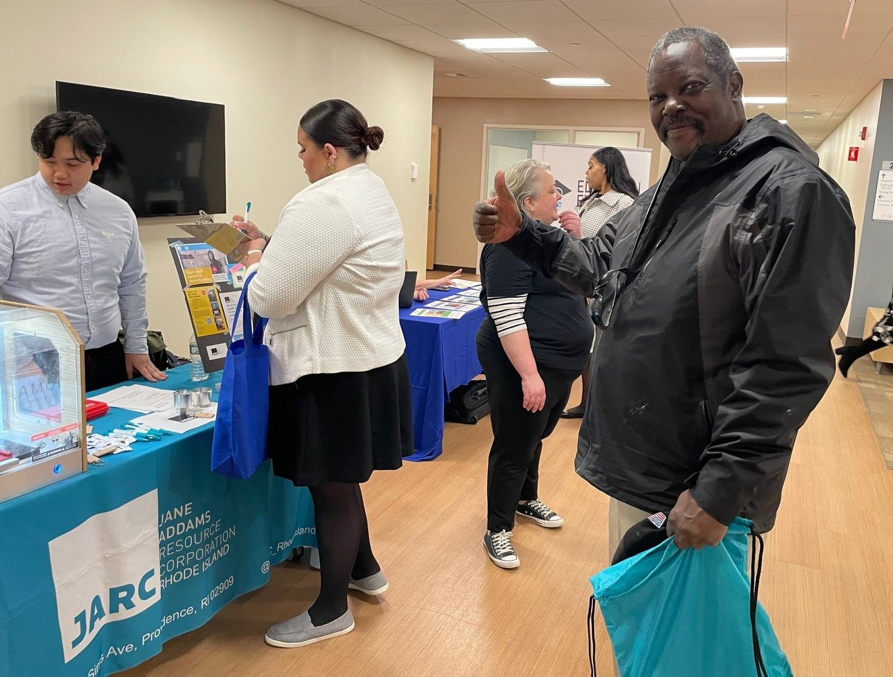
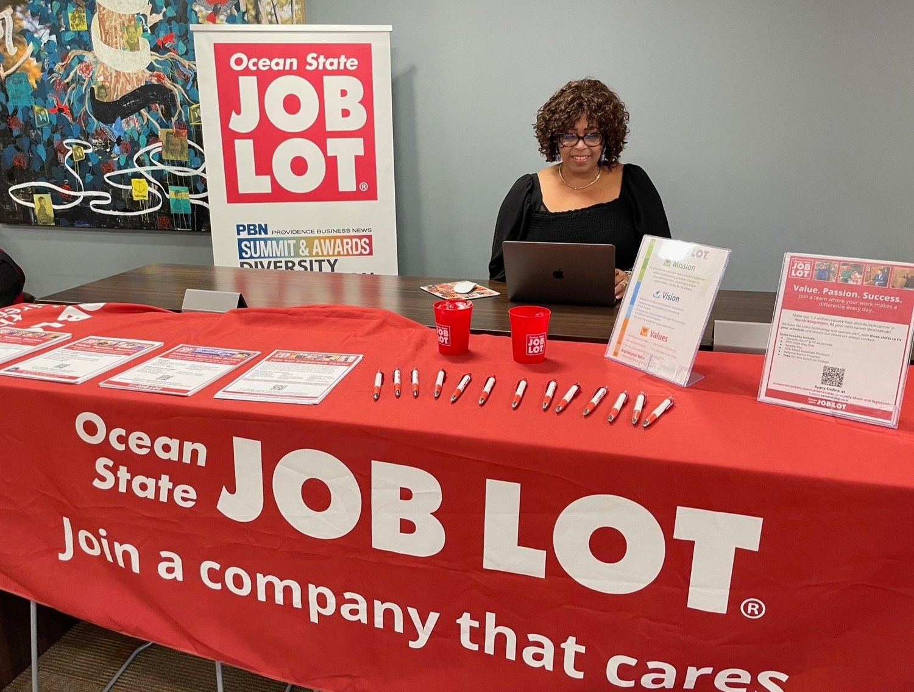
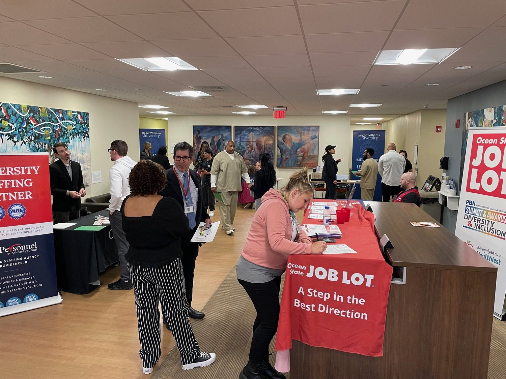
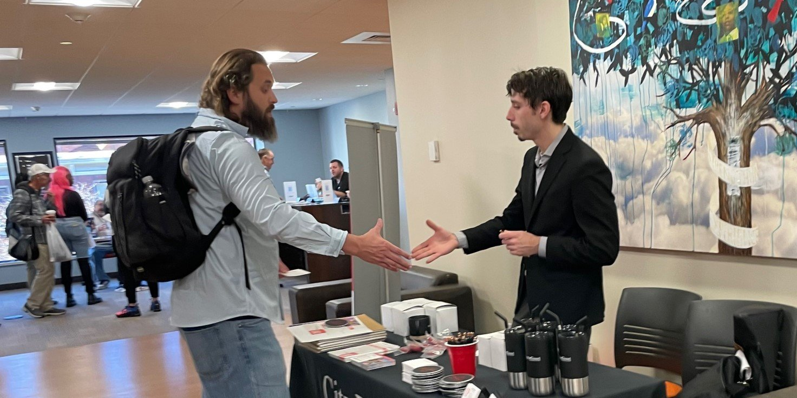
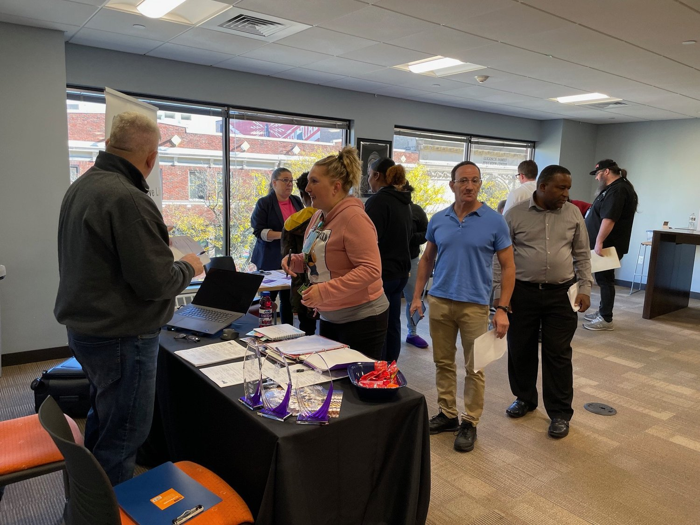

Fair Chance Job Fair
Since 2023 OpenDoors and Roger Williams University Extension School have held Fair Chance Job Fairs in downtown Providence. While job seekers with criminal records are often intimidated at conventional job fairs, we break down the stigma so that job seekers are free to be themselves and so that your business can find the top talent you’re looking for.
Are you looking for your next great hire? Willing to consider folks who might have criminal backgrounds?
Find your next great hire at a Fair Chance Job Fair. Register for the next one by clicking the button below!
Date & Time:
Next Job Fair TBD
What is Fair Chance Hiring?
Fair Chance Hiring involves giving job applicants a fair chance at the application stage. It may also include special processes to remove bias or perceived bias from the hiring process. There are many ways employers are finding success with Fair Chance Hiring but it all boils down to considering the talent and experience before the background.


Why Practice FCH?
People who have been incarcerated suffer tremendous economic losses and are much less likely to hear back from potential employers. However, studies show that employees with criminal records perform the same as or better than those without criminal records. They are also less likely to quit voluntarily than other workers, and tend to have longer tenures.
How can Fair Chance Hiring help you?

Business
While justice-impacted workers are skilling up and adapting to new challenges, businesses across the country are seeing a talented workforce and an addressable market that should not be ignored. According to SHRM:
・85% of HR professionals believe workers with criminal records perform their jobs about the same or better than workers without criminal records.
・81% of HR professionals felt the cost-per-hire of workers with criminal records was about the same or less than workers without criminal records.
・75% of HR professionals said workers with criminal records were just as or more dependable than workers without criminal records.In the same survey, ⅔ of Human Resources professionals surveyed said they are already hiring justice-impacted employees. American businesses are embracing this capable workforce and creating opportunities that serve both the employer’s and employee’s best interest - a win-win for Rhode Island.
It’s already happening nationally. The Business Roundtable, SHRM, National Employment Law Project, companies like Lowe’s, Amazon, and JP Morgan Chase have all taken strong stands that Fair Chance Hiring is good business. The Second Chance Business Coalition and other organizations are creating sample materials that businesses can customize to their unique hiring needs. With fair chance hiring practices, your company can manage security and other concerns while still connecting with your next great hire from the justice-impacted community.

Community
Rhode Island is a vibrant community filled with creative and talented people. Within that community are those of us who’ve been involved with the criminal legal system at some point in our lives. It’s estimated that ⅓ of Americans - between 70 and 100 million people - have criminal records or history of arrest. While conventional attitudes towards background checks and negligent hiring risk make it harder for justice-impacted folks to achieve upward social mobility, Rhode Islanders are incredibly resilient.
Today businesses, non-profits, training programs, and whole colleges created and operated by justice-impacted Rhode Islanders are showing the business community that they’re a workforce to be reckoned with. Technical training programs have been created to prepare formerly-incarcerated workers for the high-tech manufacturing jobs of the 21st century. Creativity, talent, and capability don’t end at the prison gates.

Supportive Services
As a consequence of the War on Drugs and aggressive prosecutions, justice-impacted folks find themselves often feeling like they’re behind the starting line while other applicants have a running start. Criminal records can be psychological barriers that make workers feel defeated or out of place in the job market. Over time, rejections can turn to discouragement.
Rhode Island has a terrific community of organizations and educational institutions that support justice-impacted individuals. Organizations like OpenDoors and Roger Williams University Extension campus can provide educational opportunities, shelter, to access benefits and recovery housing. Community organizations support justice-impacted workers by helping to meet their basic needs and allowing them to bring their best to the job and achieve their career and financial goals.
Businesses also have access to incentives and Federal bonding designed to mitigate the perceived risk of employing someone with a criminal record. The RI Department of Labor and Training maintains incentives like Work Immersion and Federal Bonding. DLT professionals are available to counsel businesses on resources and programs that can help make Fair Chance Hiring make sense (and dollars!) for your business.